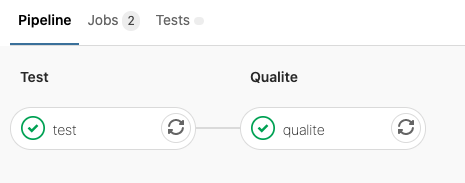

behave,Pour ce TP, utiliser la branch 2_starting_test_behave
git checkout 2_starting_test_behave
Sur cette branche, il y a maintenant :
tests/test_functional/ qui contient le squelette d'un test fonctionnel.Dans cette partie, nous allons rédiger un test fonctionnel avec l'outil Behave.
Pour cela, il y a un squelette de test fonctionnel à compléter dans dsin2/tests/test_functional/features/training_workflow.feature.
Le test correspondant se trouve dans dsin2/tests/test_functional/features/steps/training_workflow.py.
Compléter le squelette de test fonctionnel:
behave tests/test_functional/features.test.Compléter la chaîne d'intégration continue avec une step qualite afin de
pytest en rajoutant l'argument --cov, python -m pytest --cov=formation_indus_ds_avancee/ tests/test_unit/ -vv -p no:warnings./tests/tests_pyramid.sh